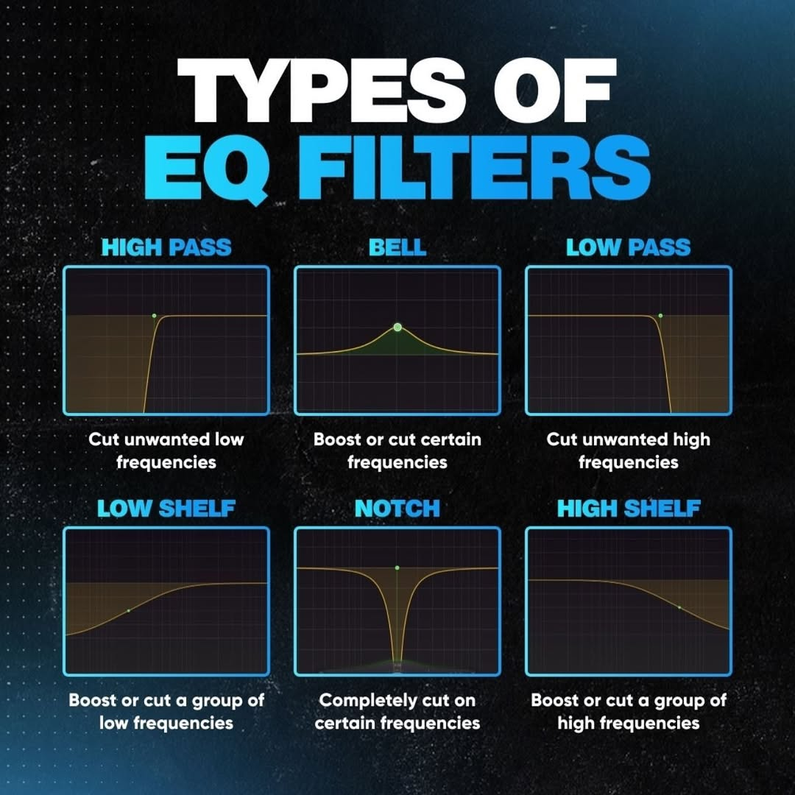

ISDE / Lección 02
Preamp, EQ, compresor y puerta de ruido
Lo básico para controlar cada canal de la mesa Behringer X32 Compact.
01 · Preamp
El previo toma una señal de audio muy débil y la eleva a nivel de línea, más fuerte y limpia, para que se pueda procesar, grabar o amplificar.
Es el primer «amplificador» de la cadena y es clave para conseguir un sonido claro, sin ruido ni distorsión, sobre todo con fuentes de nivel bajo: micrófonos, guitarras o tocadiscos. Además de ganancia, puede aportar control de volumen, de tono y, a veces, color.
Un poco de historia
Lee de Forest inventó el triodo (1907), que hizo posibles los amplificadores prácticos. Al principio se usaron en el ejército y las telecomunicaciones, pero pronto resolvieron un problema esencial de la industria musical: la señal de los micrófonos y los tocadiscos no tiene nivel suficiente para reproducirse o grabarse directamente.
En la X32: el previo es el control Gain de cada canal. Ajústalo primero: si la ganancia es baja tendrás ruido; si es alta, saturación.
02 · Ecualización
Ecualizar es ajustar el volumen de distintas frecuencias o rangos de frecuencia (graves, medios, agudos) de una señal.
El oído humano percibe desde unos 20 Hz hasta 20.000 Hz. Ese rango se suele dividir así:
| Banda | Rango aproximado |
|---|---|
| Subgraves | 20 – 60 Hz |
| Graves | 60 – 250 Hz |
| Medios | 250 – 1.500 Hz |
| Medios altos | 1.500 – 6.600 Hz |
| Agudos | 6.600 – 20.000 Hz |
Úsala con medida: la EQ no arregla errores que no le corresponden. Puede realzar o atenuar una característica de la señal, pero no eliminarla, salvo que borres todo el rango de frecuencias en el que está.
Parámetros
| Frecuencia (Hz) | La frecuencia o el rango sobre el que se actúa. |
| Ganancia (dB) | Cuánto se sube o se baja esa frecuencia. |
| Q (ancho de banda) | La anchura del rango afectado. Con una Q muy estrecha se puede llegar a una sola frecuencia; con una muy ancha, a casi toda la señal. |
Tipos de filtro
| Low cut / High pass (HPF) | Elimina los graves por debajo de un punto. |
| High cut / Low pass (LPF) | Elimina los agudos por encima de un punto. |
| Peak / Bell | Sube o baja una frecuencia concreta y su entorno. |
| Low shelf | Sube o baja todos los graves a partir de un punto. |
| High shelf | Sube o baja todos los agudos a partir de un punto. |
| Notch | Corta por completo una frecuencia muy concreta (útil contra acoples). |

Un poco de historia
- 1915: George Ashley Campbell, en AT&T, desarrolla el filtro eléctrico con circuitos LC (bobina y condensador), la base de los ecualizadores.
- 1951: el Pultec EQP-1 se convierte en el primer ecualizador de programa construido para audio. Con una ganancia de compensación fija pasa a ser el EQP-1A, un clásico de los estudios.
- 1972: George Massenburg publica en la AES el artículo «Parametric Equalization», que da a los ingenieros un control casi total de la frecuencia.
03 · Compresión
Un compresor reduce el rango dinámico de una señal: la diferencia en decibelios entre sus picos más altos y sus partes más bajas.
Parámetros
| Threshold (umbral) | Nivel a partir del cual empieza a actuar el compresor. |
| Ratio | Cuánto se comprime la señal que supera el umbral. Con 4:1, por cada 4 dB por encima del umbral solo sale 1 dB. |
| Attack | Tiempo que tarda el compresor en actuar después de que la señal supere el umbral. |
| Release | Tiempo que tarda en dejar de comprimir. Ajústalo de acuerdo con el attack: si es demasiado largo, el compresor no se recupera antes del siguiente pico. |
| Make-up (ganancia de salida) | Sube la señal de salida para compensar los dB perdidos al comprimir. |
| Knee (codo) | Si el compresor entra de golpe (hard knee) o de forma progresiva (soft knee). |
| Look-ahead | Analiza la señal unos milisegundos por adelantado para que la compresión sea más rápida y precisa. |
Un poco de historia
- Años treinta: la radiodifusión necesita controlar la dinámica para evitar la sobremodulación. Fabricantes como Telefunken o Western Electric crean los primeros dispositivos para megafonía y control de volumen.
- Años cincuenta: nacen compresores icónicos que definen el sonido de estudios legendarios, como el RS124 de Abbey Road.
- De los setenta a hoy: aparecen nuevas tecnologías y, con la era digital, los plugins (VST) democratizan su uso y emulan los clásicos analógicos.
04 · Puerta de ruido (noise gate)
Una puerta de ruido corta el paso a toda señal que no supere un umbral fijado.
Funciona literalmente como una puerta: si la señal supera el umbral, la puerta se abre y suena; si queda por debajo, se cierra y se silencia. Así se eliminan sonidos no deseados en las pausas y la mezcla queda más limpia. Es especialmente útil en voces, guitarras y baterías (ruido ambiente, zumbidos, roces o interferencias).
Otra forma de entenderla: imagina a una persona encargada de subir el fader solo cuando la señal alcanza cierto nivel y de dejarlo abajo el resto del tiempo. Además, puedes pedirle que lo suba o lo baje más rápido o más despacio.
Parámetros
| Threshold (umbral) | Nivel que decide cuándo se abre y se cierra la puerta. |
| Attack | Lo rápido que se abre la puerta. |
| Hold | Cuánto tiempo se mantiene abierta después de que la señal baje del umbral, antes de empezar a cerrarse. |
| Release | Lo rápido que se cierra la puerta. |
05 · En la mesa
En cada canal de la X32 Compact encontrarás estos bloques. Un orden de trabajo habitual:
- Gain (previo) y, si hace falta, el low cut para quitar graves que no aportan.
- Gate, para limpiar las pausas.
- EQ, para dar forma al timbre.
- Dynamics (compresor), para controlar los picos.